← All Posts
Joyce Llorera
February 25, 2026

Online Games
The computer has always been one of the most fascinating inventions to me, especially because it allows me to play online games. In a way, my curiousity about how computers and games work is one of the reasons I became an IT student. Honestly, I used to think it was all magic. I can connect with people from all over the world and share experiences in ways that weren't possible before. Online games, in particular, have given me the chance to interact, compete, and cooperate with others, all through a single device.
I play games not only for fun but also for the people I meet and experiences I gained along the way. Mobile Legends was the first online game I ever played. It was introduced to me during the pandemic. I used to think it was just a lousy game because it was played by my guy classmates who are all loud and messy. But once I tried and learned playing it, I loved it. I became one of those what they say "ml addict", who never sleep and eat because their time was too occupied by the game. Because what else would we do at home other than playing games? It was a lockdown and everything was done at home. My schoolworks are just sent to our place and I will work on it right after receiving and then spend the rest of the week playing games. I was always scolded because of my behaviors while playing game, and I think it does affected me negatively. I had tantrums during the game and would often shout curse words. But I'm already done from that phase since I already grew up. That's the negative part of online games, but I love the other side of it. The positive side, which is the people.
I made a lot of online friends during the pandemic. We would always play and spend our time together. Those friends taught me a lot of things. Some of them are college students at that time, some even are already working, and of course there are same age as me. They shared different stories and experiences, and it's not about the game anymore, it's about life. How they handle things that worries them, and how they try to reduce their stress by playing games. I loved those time that I was still young and free, everything was fun and interesting. Simple games with friends already excite me and I will always love to go back to the time that I'm still a teenager without a lot of burden in life. But since people grow up and change, my time with online games had lessen. When the pandemic ended and face-to-face classes returned, I lost contact with my online friends. I forgot their names and accounts. But I know that some of them are still on my friends list because I don't remove any followers on my account. Mobile Legend is such a great experience during the pandemic, but I hope the pandemic never happen again.
Roblox, another game I play. It's a lot different from Mobile Legends because it has a lot of games inside that game itself. There are many game that I can choose to play. I can build houses, draw objects, style outfits, design a garden, drive cars and so much more. With so many choices, it sometimes feels overwhelming. I had played roblox before, but the year I played it most of the time was last year, 2025. That was when Grow a Garden became a famous game on Roblox. At first, I thought it was boring, just like how I once thought Mobile Legends was boring. But notice the pattern—whenever I think a game is boring, I eventually get addicted to it. Last year was a roller coaster of experiences. I made many friends, created countless memories, and gained so many experiences on Roblox. Some friendships lasted longer than I expected, while others eventually faded away. But I guess that's just how life is—not everything is meant to stay the same forever.
I started playing Roblox because of my younger sister, who was addicted on the game Grow a Garden. It was during her summer break, while, I, as a college student, was still on my last semester. At first, I had no plans to play it, but when I tried it once, I was hooked. I quickly became addicted to the game because it was genuinely fun and interesting. There was an event every week that we would eagerly wait for, hoping to mutate our plants and earn more sheckels. However, I wasn't really playing for the value of the plants or the amount of sheckles I could make, I was there for the garden. I would open the game just to fix and rearrange my garden or recreate garden layouts I saw on tiktok. It was a fun experience, but eventually, the game started to lose it's spark. As everyone began earning huge amounts of sheckles, many felt that things in the game had lost their value, and the excitement slowly faded. I don't play the game anymore, but it was still a great experience and one of the many memories I made last year.
Even after the summer break ended, I continued playing Roblox because it became my escape from everything. There was a time when I felt like everyone hated me, and all I wanted to do was immerse myself in a game and forget about those thoughts for a while. I often played mountain-climbing games in Roblox, where I had to climb mountains while overcoming different obstacles. It's just like an obby game but there are checkpoints and a peak waiting at the end. Since the IT department was holding virtual classes while our building was and still under renovation, I spent most of my time at home. Whenever I had free time, playing games became one of the things I often turned to.
Roblox is where I met many friends, and until now, I still play with some of them. What started as simply playing the same games eventually turned into friendships and connections I never expected to make. We spent countless hours playing together, sharing laughs, and creating memories through the games we enjoyed. I'm grateful for the people I met through Roblox because, for a while, they became a part of my everyday life and made my gaming experience even more enjoyable.
Game is not just a game; it is an experience filled with emotions, learning, and interaction. It brings people together, allowing everyone to meet, connect, and share moments with one another. More than simple entertainment, games create memories, friendships, and stories that stay with us even after the screen is turned off.
Read More

Scenery
February 24, 2026

Memory Keeping
February 26, 2026

Dream Careers
August 05, 2026

The Child I Was
August 07, 2026
Gallery
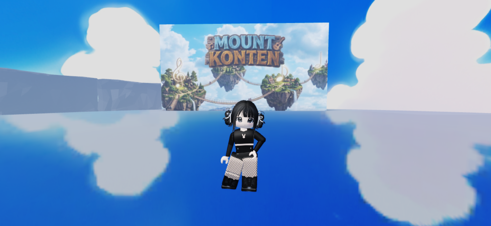
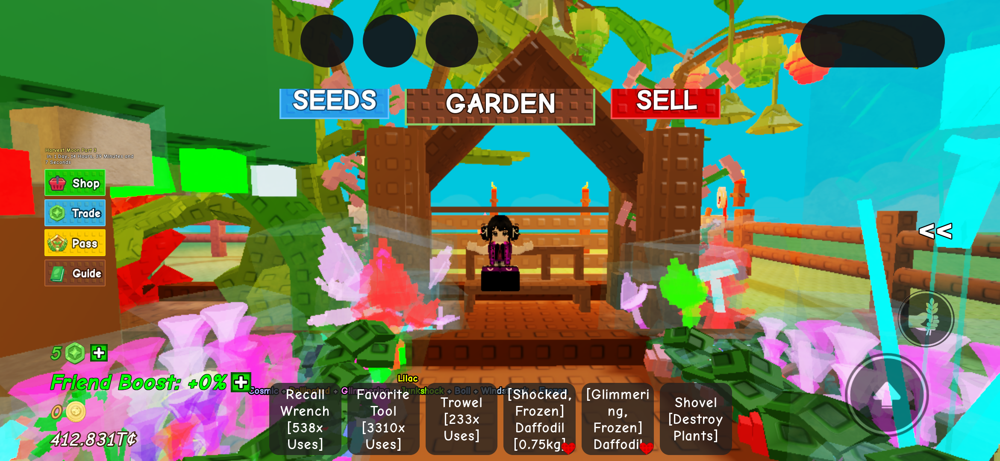
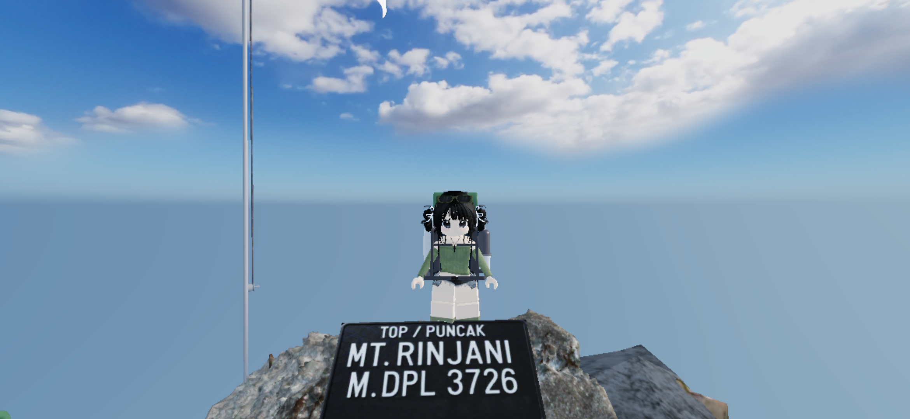
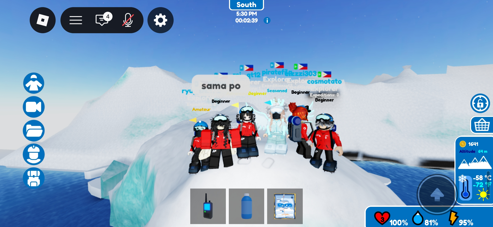
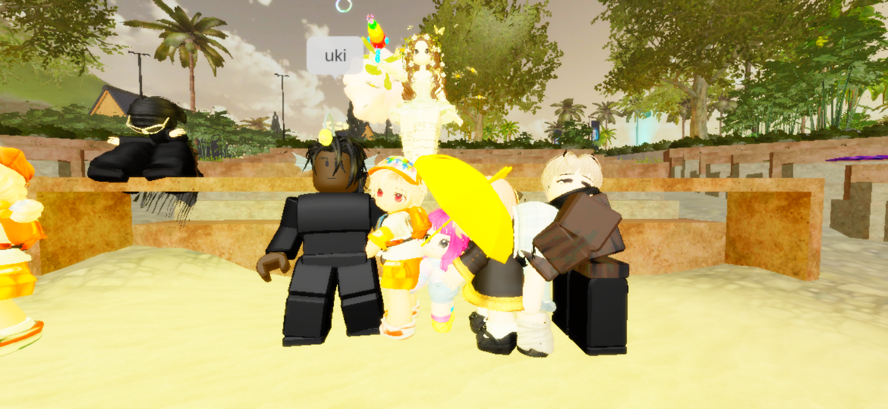
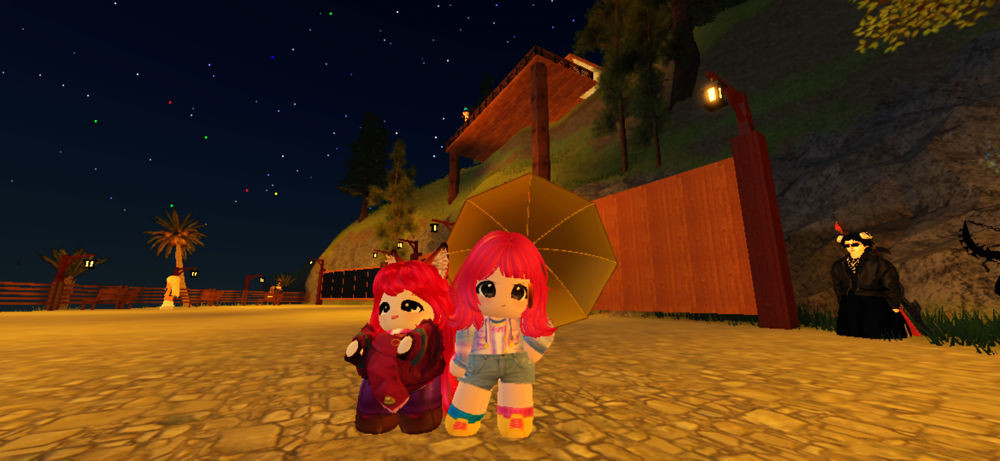
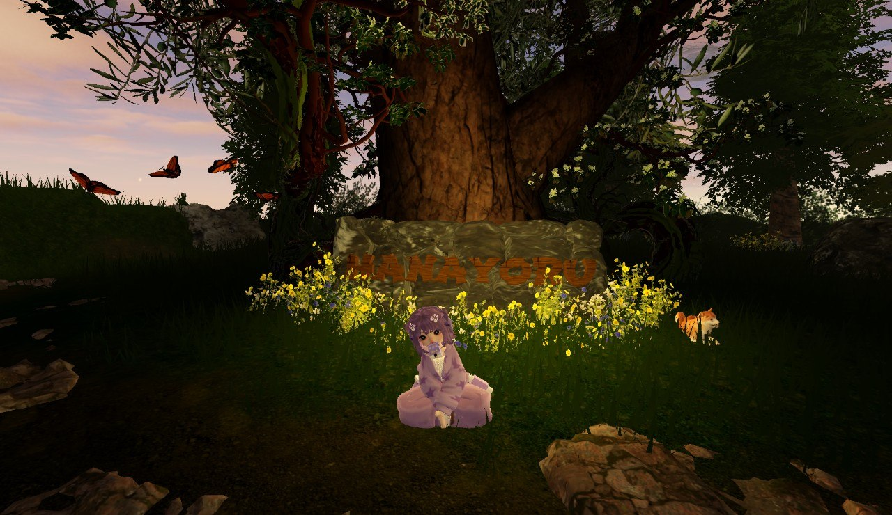
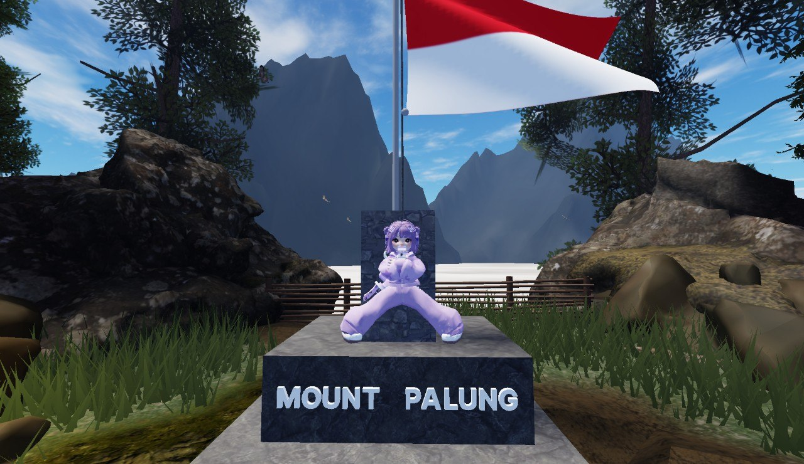
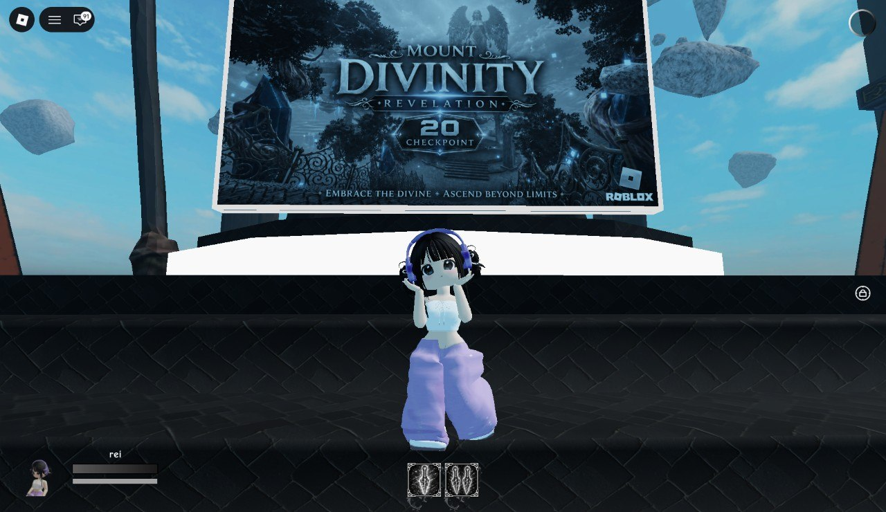
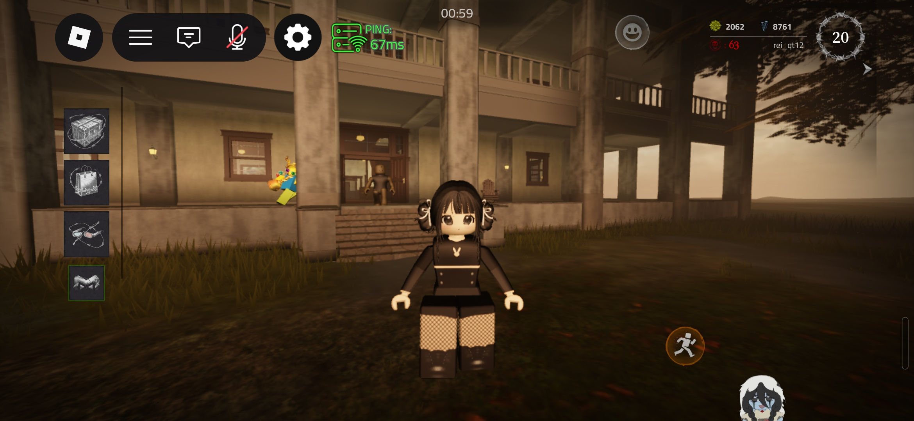
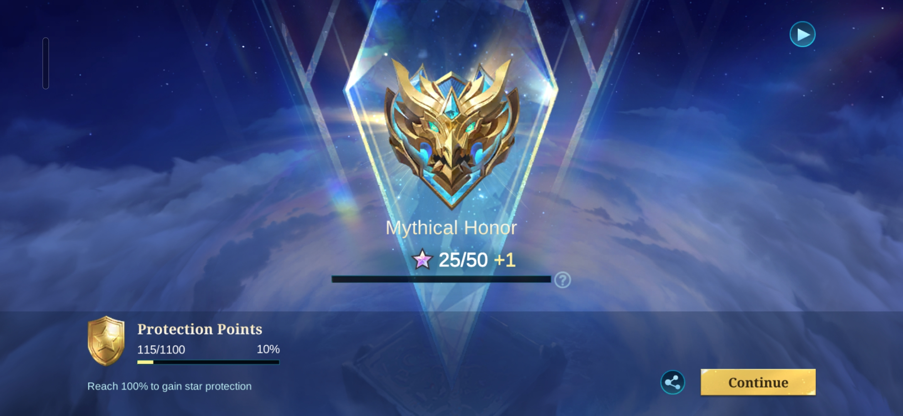
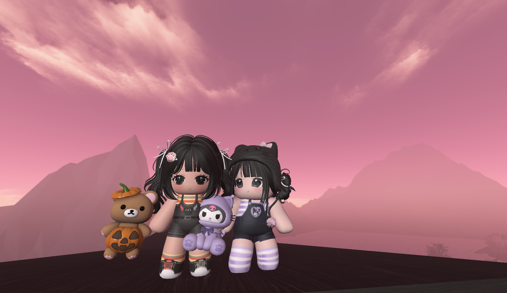
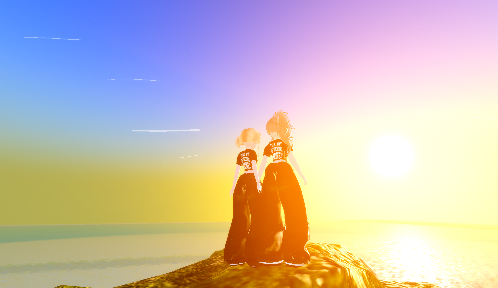
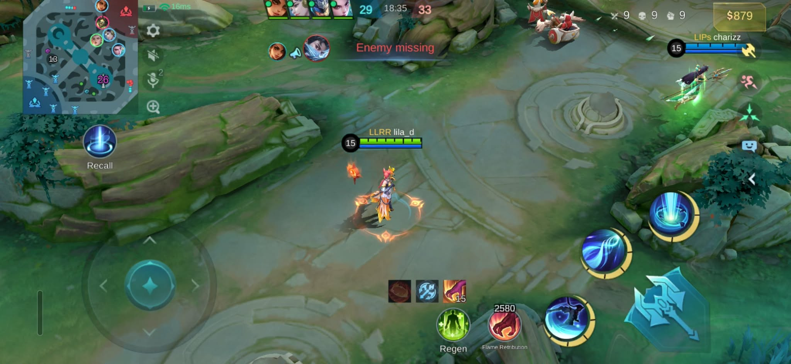
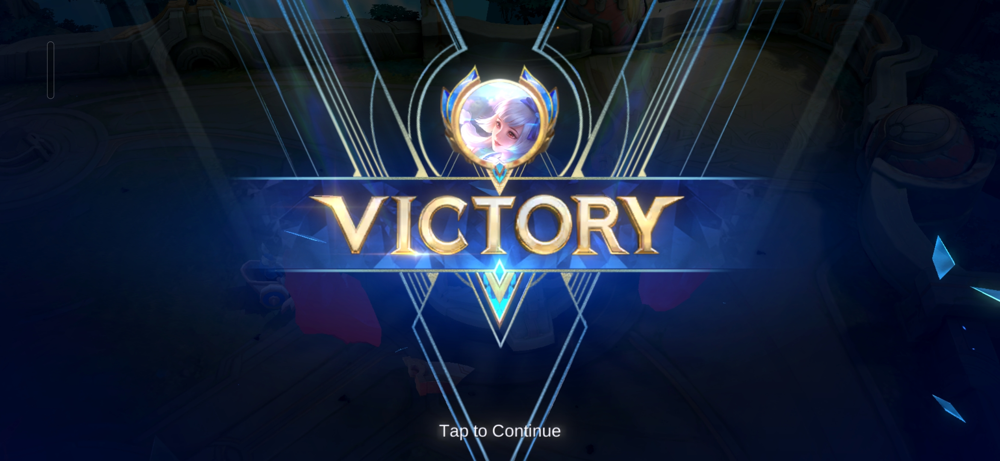
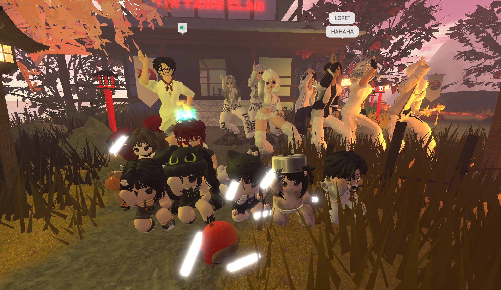
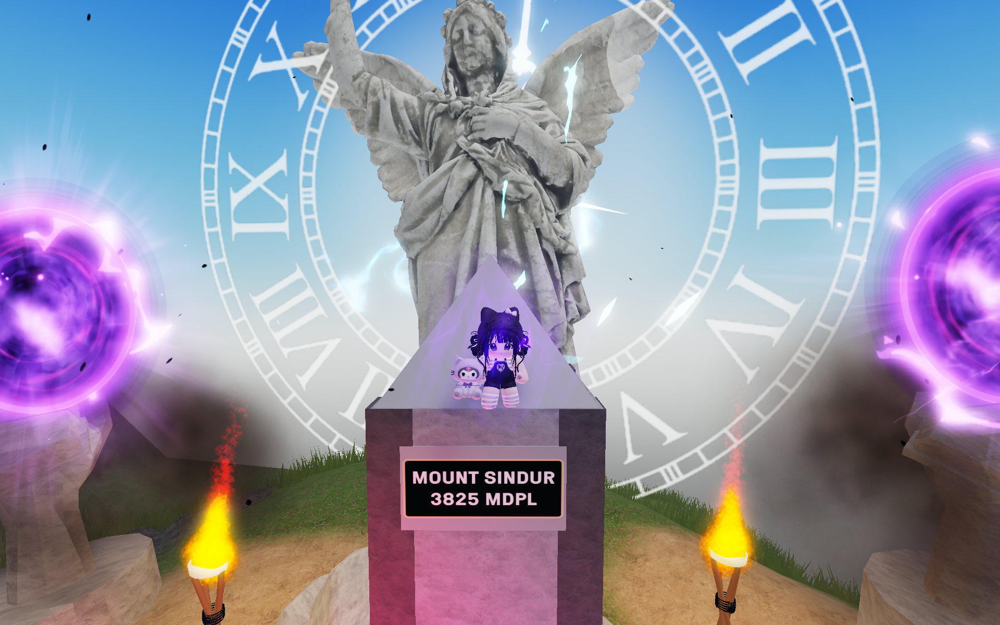
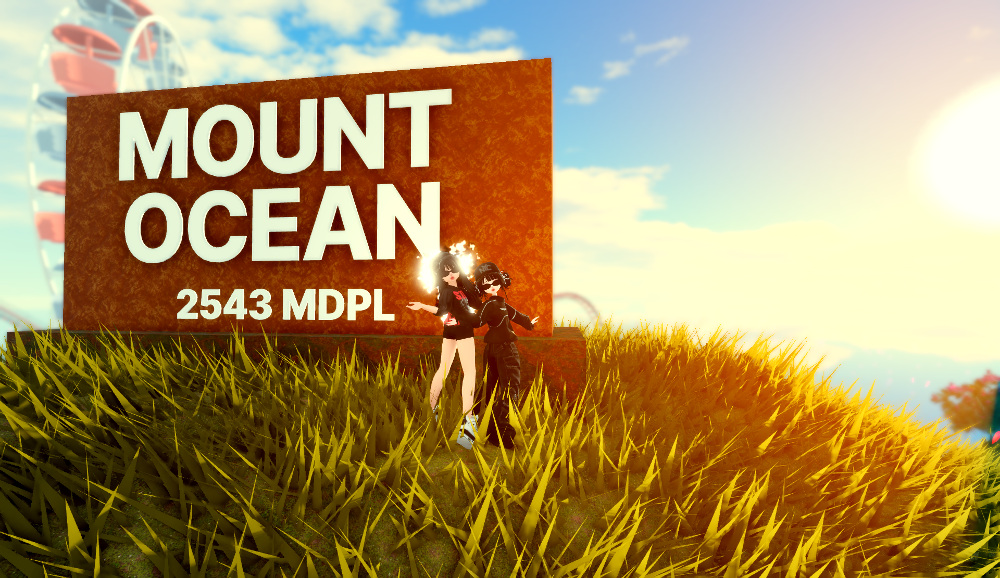
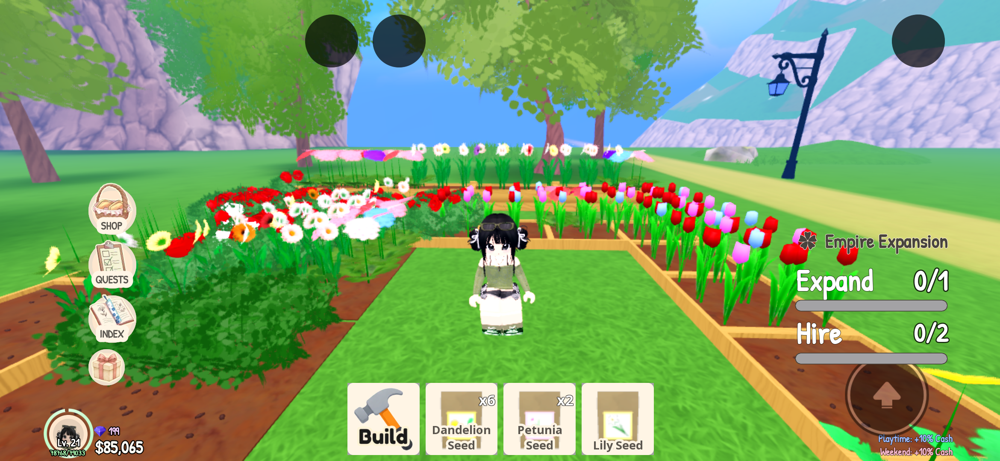
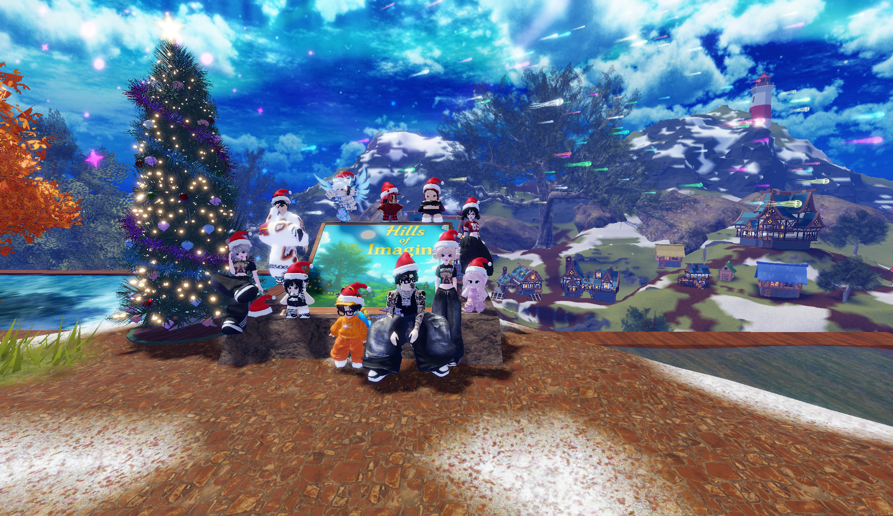